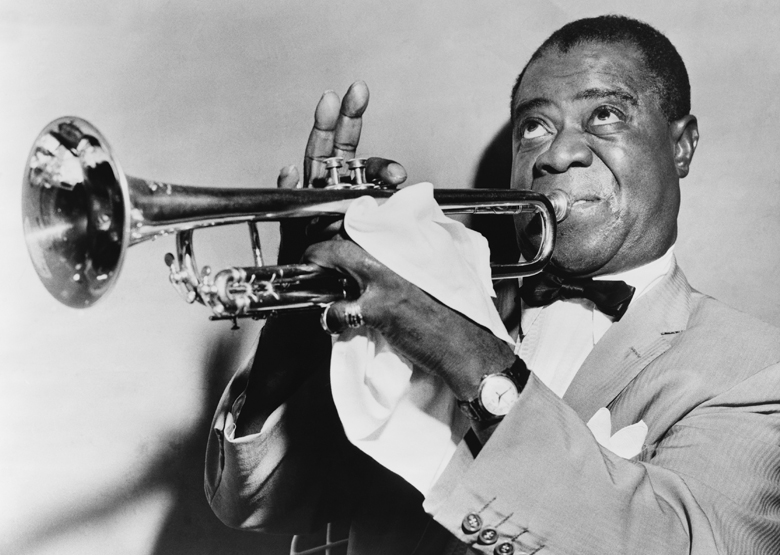
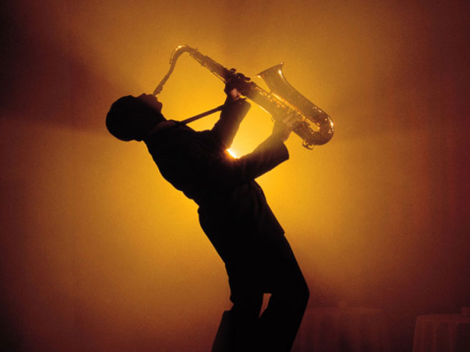
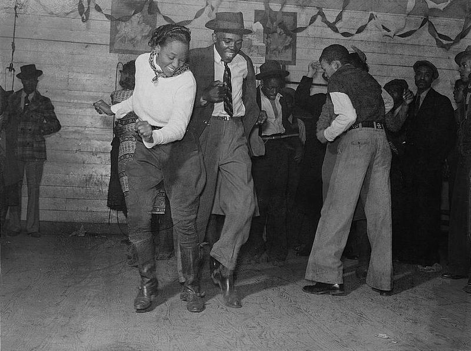

Прича о џезу почиње са поробљавањем афричког народа који је радио на плантажама широм Америке. До краја грађанског рата у САД и забране поробљавања црначког народа, из Африке је доведено око 11 милиона црнаца. Афрички народ је са собом из домовине понео своју културу и традицију, због чега и кажемо да су сами корени џеза у афричкој традиционалној музици. Да би се лакше разумело, поделићемо године на значајне епохе развоја џез музике.
1890.-1910. |
1890. до 1910.- у овом периоду у Њу Орлеансу је настао џез. Зашто баш Њу Орлеанс? Једноставно- овај град се налазио на ушћу реке Мисисипи и Мексичког залива. Због свог повољног географског положаја Њу Орлеанс је био једна од највећих лука у коју су упловаљавали бродови који су превозили поробљен афрички народ. У овом периоду је дошло до мешања афричке традиционалне музике са локалним фолклором и музиком, и све то је свирано на европским интрументима. Ово су назвали џезом. Убрзо су настали први џез стилови као што су Регтајм (,,Regtime'') и Диксиленд (,,Dixieland’’). Ова два облика музике су били први облици џеза и уопште црначке музике која је почела да се слуша и међу белцима. Први џез музичари су били Скот Џоплин- ,,Краљ Регтајм стила'', Џели Рол Мортон, Ма Рејни и Ви Си Хенди-,,Отац Блуза''. |
 |
1920. |
У овој деценији је измишљен радио који је омогућио џез и блуз музичарима да њихова музика буде снимљена и емитована широм Америке. У ово време највећу популарност је имала Беси Смит (Bessie Smith) која је носила титулу ,,Краљице блуза“. |
|  | 1930. |
Након пада америчке берзе (1929. године) и периода познатог као ,, Велика Депресија“ било је време да се заустави расизам. И управо је на том путу била џез музика која је у ово време потпуно променила Америчку културу, уводећи Свинг који је био широко прихваћен међу белцима. |
1940. |
Због лоше економиије и избијања II Светског рата, продуцентске куће су престале са радом, па је једини начин да се чује музика био радио. У ово време се појавио изузетно битан стил џеза- Бибоп(,,Bebop”). Бибоп су измислили музичари који су хтели да имају више креативне слободе него што је свинг то дозвољавао. Пионири овог правца су били Чарли Паркер (Charlie Parker), Дизи Гилеспи, Телонијус Монк (Thelonius Monk), Бад Павел (Bud Powell), Кени Кларк (Kenny Clarke), Макс Роуч (Max Roach) и Реј Браун (Ray Brown). |
1950. |
Педесете године су у џезу познате по настанку нових стилова попут Хард-Бопа који се свирао на источној обали Америке, а значајан је зато што је поново спојио џез са блузом. Под утицајем савремене музике развио се мирнији тј. Хладан (,,cool“) џез, који је представљао мешавину Бибопа и Свинга. Из Бибопа се развио нови стил под именом Хард-Боп који је имао више ,,душе“ и ритам секције су биле ,,префињеније“ него код Бибопа. Ова деценија ће у историји музике бити упамћена по настанку Рокенрола (,,Rock n roll”) који је настао захваљујући џез и блуз музици. |
 |
1960. |
Џез постаје одраз расположења Америчке нације која је погођена ратом у Вијетнаму и борбом за људска права. Јављају се Слободан (,,free”) џез, Авантгардни џез и Џез фузија која се јавља са појавом електричних инструмената. Захваљујући џез фузији, 70-их настаје Реп музика. | |
1970.-2000. |
1971. је преминуо један од најутицајнијих џез музичара Луис Армстронг, а са њим, како се у том тренутку чинило, и сам џез. Али, 1983. са појавом компакт дискова, јавила се нова нада која пружа опстанак џез музици. Поново се јавља Бибоп. 80-их се јављају нови стилови попут Ејсид (,,Acid”) и Смут (,,Smooth”) џеза који са представницима попут Пет Метенија (Pat Metheny), Шаде (Sade), Џемирокваја (Jamiroquai), Бренд Њу Хевис (Brand New Heavies), Малоко и других постају .популарни широм Америке и Европе. 90-их се јављају покушаји комбиновања електронске музике са џезом. Представници су позната Исланђанка Бјорк и група Портисхед(Portishead). Са почетком 21. века јављају се младе џез звезде од којих зависи будућност и сам опстанак џез музике, а њихова имена су Нора Џоунс (Nora Jones), Дајана Крол (Diana Krall), Џил Cкот (Jill Scott), Џејми Кулум (Jamie Cullum), Ерика Баду (Erykah Badu), Ејми Вајнхаус (Amy Winehouse). |